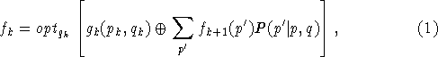
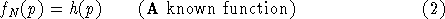

In the stochastic case we don't have a transformation rule T, but rather a probability function , which is the conditional probability that we go to p' given that we are in state p and take action q at stage k.
It should be clear than in this case we don't want to find a set of decisions, but rather a sequence of rules. Each rule will tell us what action to take at every state at each stage. Since given the state and the stage the action is determined, such a policy is called deterministic. It can be proven that optimal policies will be deterministic.
In the stochastic case the recursive equation is:

with

The problem is fully determined stating: